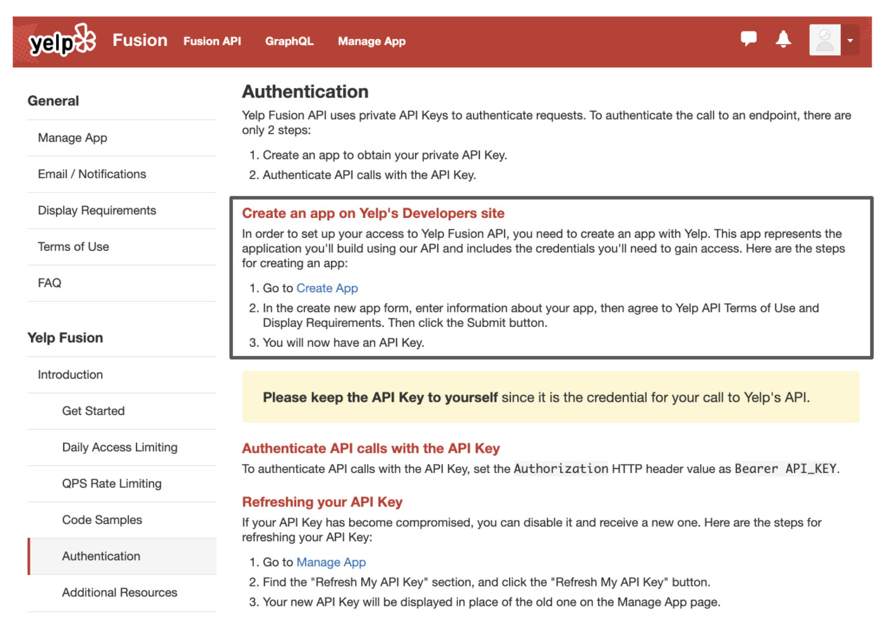
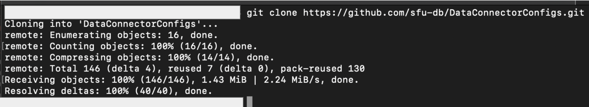
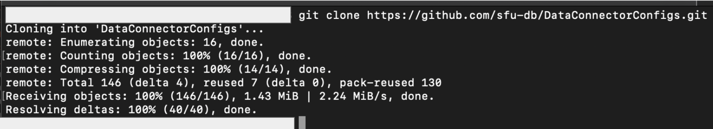

Tutorial - Data Connector for Yelp¶
Overview¶
data_connector is a component in the dataprep library that aims to simplify the data access by providing a standard API set. The goal is to help the users skip the complex API configuration. In this tutorial, we demonstrate how to use data_connector library with Yelp.
Preprocessing¶
If you haven’t installed dataprep, run command pip install dataprep or execute the following cell.
!pip install dataprep
Obtaining access token from Yelp¶
To connect to Yelp, you need to generate a token. This token is a unique identifier of an application requesting access to Yelp’s API. Once an application creates the token, it will act as your credential when making an API request.
To receive an access token, the user needs to create a server-side application from Yelp, this can be done by visiting the Yelp API documentation, entering some information about its use and generating a key.
{kind=link}
Store the token or API Key in a secure location as it will be used to provide you access to the Yelp’s restaurant data.

Download and store the configuration files in dataprep¶
The configuration files are used to construct the parameters and initial setup for the API. The available configuration files can be manually downloaded here: Configuration Files or automatically downloaded at usage.
To automatically download at usage, click on the clipboard button, unsure you are cloning with HTTPS. Go into your terminal, and find an appropriate locate to store the configuration files.
When you decided on a location, enter the command git clone https://github.com/sfu-db/DataConnectorConfigs.git. This will clone the git repository to the desired location; as a suggestion store it with the dataprep folder.
From here you can proceed with the next steps.
 

{kind=link}
Below the configuration file are stored with dataprep.

Initialize data_connector¶
To initialize run the following code. Copy and paste the Yelp API key into the access_token variable and ensure the connector path is correct. Once you have that running, you can use the built in functions available in connector.
from dataprep.data_connector import Connector
access_token = “insert_token_key”
dc = Connector("./DataConnectorConfigs/yelp", _auth={"access_token":access_token})
Functionalities¶
Data connector has several functions you can perform to gain insight on the data downloaded from Yelp.
Connector.info¶
dc.info()

Parameters¶
There are additional parameters to query with Yelp. If you are interested in reading up the other available parameters and setting up your own config files, please read this Yelp link and this Configuration Files link.
Connector.show_schema¶
The show_schema method returns the website data in a Dataframe format. There are two columns in the response. The first column is the name and the second is the datatype. As an example, lets see what is in the publication table.
dc.show_schema("business")

Connector.query¶
The query method downloads the website data. The parameters must meet the requirements as indicated in connector.info for the operation to run.
When the data is received from the server, it will either be in a JSON or XML format. The data_connector reformats the data in pandas Dataframe for the convenience of downstream operations.
As an example, let’s try to get the data from the “business” table, providing the term “city” and location “seattle”.
dc.query("businesses", term = "city", location = "seattle", limit = 10)

From query results, you can see how easy it is to download the restaurant data from Yelp into a pandas Dataframe. Now that you have an understanding of how data connector operates, you can easily accomplish the task with two lines of code.
dc = Connector(...)
dc.query(...)
Pagination¶
dc.query("business", term = "city", location = "seattle", _count = 200)
{kind=link}
Pagination does not concurrently work with the limit parameter in a query, you need to select either limit or _count.
That’s all for now.¶
Please visit the other tutorials that are available if you are interested in setting up a different data connector. If you are interested in writing your own configuration file or modify an existing one, refer to the Configuration Files.